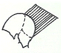
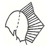
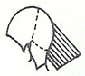
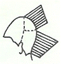
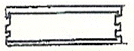
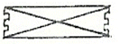
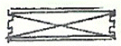
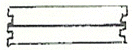
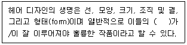
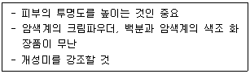

미용장 (2007-04-01 기출문제)
1과목: 임의 구분
1. 이완된 피부상태를 수축시키며 피지분비를 과잉을 억제하는 산뜻한 감촉의 화장수는?
- 유연화장수
- 영양화장수
- 수렴화장수
- 소염화장수
(정답률: 76%)

2. 다음 그림 중 스텝 레이어(step layer)는?




(정답률: 74%)
3. 다음 중 네일아트 사용시 필요한 제품이 아닌 것은?
- 팁
- 실크
- 에어 브러쉬
- 콜로디온
(정답률: 67%)
4. 스캘프 머니플레이션 (scalp manipulation)의 목적이 아닌 것은?
- 두피의 혈액순환을 촉진
- 두피의 근육을 자극하며, 두피의 피지선을 자극
- 두피에 부착된 먼지, 노폐물, 모발의 엉킴을 제거
- 두피의 비듬성 질환과 가려움증의 완화
(정답률: 64%)
5. 퍼머넌트에서 머리가 짧고 머리가 많은 두발에 가장 적합한 밴드기법은?




(정답률: 84%)
6. 적외선등의 사용에 관한 내용 중 가장거리가 먼 것은?
- 650~1400 nm 파장으로 조사한다.
- 60 cm 정도 떨어진 위치에서 조사한다.
- 피부표면의 살균을 위해 사용한다.
- 눈보호대를 사용해야 한다.
(정답률: 45%)
7. 모발의 멜라닌 색소에 대한 설명 중 틀린 것은?
- 입자형으로서 갈색부터 흑갈색까지의 색상을 나타내는 색소는 유멜라닌이다.
- 분사형으로서 연노랑에서 붉은 색까지의 색상을 나타내는 색소는 페오멜라닌이다.
- 분사형보다 과립형이 먼저 탈색된다.
- 노란색에 가까운 모발일수록 유멜라닌 색소가 많이 들어 있는 것이다.
(정답률: 53%)
8. 염색 및 퍼머넌트 후 산성린스를 사용하는 이유는?
- 염색 및 퍼머넌트 후 모발의 pH가 산성화되어 있기 때문
- 염색 및 퍼머넌트 후에는 모발이 뻣뻣해지기 때문
- 염색 및 퍼머넌트 제품이 산성이기 때문
- 모발의 가장 안정한 상태인 pH 4.5 ~ 5.5를 유지시켜 주어야 하기 때문
(정답률: 86%)
9. 다음 중 오리지날 세트 (original set)의 과정이 아닌 것은?
- 헤어 세이핑 (hair shaping)
- 헤어 컬링 (hair curling)
- 콤 아웃 (comb out)
- 헤어 웨이빙 (hair waving)
(정답률: 55%)
10. 작은 눈을 크게 보이도록 아이새도(eye shadow)를 이용한 눈 부분 수정 화장법의 기본은?
- 윗 눈꺼풀의 안쪽 끝 부분에 아이새도를 강하게 칠한다.
- 윗 눈꺼풀의 눈꼬리 부분에 강하게 칠한다.
- 윗 눈꺼풀 전체에 고루 바르며 눈과 가까울수록 진하게 한다.
- 아래 눈꺼풀의 눈꼬리 부분에만 바른다.
(정답률: 72%)
11. 피부의 탄력을 결정짓는 가장 중요한 요소는?
- 콜라겐섬유
- 엘라스틴섬유
- 교원섬유
- 이온섬유
(정답률: 47%)
12. 털의 영양을 관장하는 혈관이나 신경이 있으며 모 발생성과 밀접한 곳은?
- 모간
- 모근
- 모유두
- 입모근
(정답률: 64%)
13. 토닝(toning)기법 중 녹색머리를 갈색으로 변형시키기 위해서는 어떤 색을 사용해야 하는가?
- 갈색
- 노란색
- 붉은색
- 검정
(정답률: 85%)
14. 다음 중 ( )안에 알맞은 말은?

- 조화(harmony)
- 구조(structure)
- 균형(balance)
- 비율(proportion)
(정답률: 79%)
15. 다음 중 영구적인 염모제를 사용해도 되는 경우로 가장 적합한 것은?
- 스킨 테스트(skin test)를 하지 않는 경우
- 스킨 테스트에서 양성 반응을 나타낸 경우
- 선택된 최종 컬러가 적절하지 않는 경우
- 퍼머 시술 후 한 달이 지난 경우
(정답률: 74%)
16. 퍼머넌트웨이브 제1액 도포 후 비닐캡(vinyl cap)을 씌우는 이유에 해당하지 않은 것은?
- 체온에 의한 신속한 솔루션의 작용촉진
- 휘발성 알칼리의 산일방지
- 로드의 움직임 방지
- 두발 전체에 1액의 고른 작용 촉진
(정답률: 67%)
17. 다음 중 무대효과를 위한 화장법으로 가장 적합한 것은?
- 선번 메이크업(sunburn make up)
- 데이 타임 메이크업( day time make up)
- 컬러 포토 메이크업 (color photo make up)
- 그리스 페인트 화장 (grease paint make up)
(정답률: 64%)
18. 다음의 화장법이 가장 적합한 피부 성상은?

- 붉은 얼굴
- 검은 얼굴
- 주근깨가 많은 얼굴
- 솜털이 많은 얼굴
(정답률: 54%)
19. 블로우 드라이로 웨이브를 만드는 설명 중 틀린 것은?
- 웨이브는 컬이 형성되어있는 두발에 주로 만들어지며 드라이는 부드러운 웨이브를 연출한다.
- 드라이로 모발을 수분함량이 30% 정도가 되도록 연출한다.
- 만들고자 하는 웨이브의 크기와 부드러움의 정도에 따라 브러시 선정과 바람의 정도를 조절한다.
- 드라이어는 드라이 롤을 끝까지 따라가며 마무리한다.
(정답률: 58%)
20. 다음 두피, 헤어 트리트먼트 제품 원료와 효과가 올바르게 연결된 것은?
- 경모에 부드러움을 주기 위한 원료 - 치오클리콜산염, 합성수지, 로진
- 연모를 강하게 해주기 위한 원료 – 알긴산나트륨, 양이온성 계면활성제, 글리칠산, 유화셀린
- 소독, 살균을 위한 원료 - 라놀린, 콜레스테롤, 안식향산
- 비듬이나 가려움증 방지 원료 - 항히스타민제, 멘톨, 유화세린, 레졸신
(정답률: 33%)
2과목: 임의 구분
21. 다음 중 마사지에 관한 설명으로 맞은 것은?
- 심부 경찰법은 마사지 시작하기 전 처음에 반드시 하는 방법
- 강찰법에는 태핑, 슬래핑, 커핑, 해킹, 비팅의 테크닉이 있다.
- 고타법에는 롤링, 린징, 처킹의 테크닉이 있다.
- 경찰법은 양 손바닥과 손가락을 이용해서 피부를 쓰다듬어 주면서 가볍게 왕복운동, 원운동으로 한다.
(정답률: 62%)
22. 석고 마스크에 대한 설명으로 가정 거리가 먼 것은?
- 얼굴 윤곽을 만들어 준다.
- 바디 관리에도 이용된다.
- 콜라겐을 90% 이상 함유하고 있다.
- 혈액 순환을 촉진시켜 피부에 생기와 탄력성을 부여한다.
(정답률: 66%)
23. 헤어 아이론의 시술에 관한 설명 중 맞는 것은?
- 헤어 아이론의 적당한 온도는 90 ~ 100℃이다.
- 가는 모발이 의외로 열에 잘 견디므로 굵은 모발과 온도를 동일하게 하여 시술한다.
- 퍼머 모발은 아이론이 잘 되지 않으므로 좀 더 뜨겁게 해서 빨리 하면 오히려 머리카락에 손상이 적다.
- 염색모발과 퍼머 모발은 건강모보다 머리카락의 손상을 줄이기 위해서 온도를 낮추어야 한다.
(정답률: 61%)
24. 탈모의 외부적인 원인이 아닌 것은?
- 모자의 착용
- 혈액순환 장애
- 세균이나 균류 증식
- 화학적인 시술 원인
(정답률: 43%)
25. 세팅에서 연결(blending)을 위해 주로 사용되는 컬은?
- 논 스템 롤러 컬 (non stem roller curl)
- 하프 스템 롤러 컬 (half stem roller curl)
- 롱 스템 롤러 컬 (long stem roller curl)
- 풀 스템 롤러 컬 (full stem roller curl)
(정답률: 33%)
26. 고려시대 원나라의 영향으로 생겨난 여성의 수식은?
- 다래
- 족두리
- 첩지
- 건귁
(정답률: 33%)
27. 다음 중 탈모 방지에 좋은 음식이 아닌 것은?
- 찹쌀
- 밤
- 버섯
- 설탕
(정답률: 71%)
28. 틴닝 커트에 대한 설명 중 맞는 것은?
- 파팅선(parting line)은 가능한 짧게 틴닝한다.
- 크라운 부위의 표면모발은 가능한 짧게 틴닝하지 않는다.
- 헴라인(hem line)부위는 자유롭게 틴닝해도 좋다.
- 틴닝할 때 틴닝가위는 두피와 평행하게 넣어 커트한다.
(정답률: 38%)
29. 다음 중 커트 후 콘벡스(convex)의 효과가 가장 크게 나타나는 것은?
- 레이어(위쪽)와 그래듀에이션(아래쪽)의 혼합
- 원랭스
- 스퀘어
- 레이어
(정답률: 38%)
30. 모발의 색을 어둡게 하거나 30% 정도의 백모를 커버하거나 컬러체인지할 때 보정의 목적으로 사용하는 염색방법은?
- 일시적(Temporary) 염색
- 반영구적(semi) 염색
- 일회성(One time) 염색
- 영구적(Permanent) 염색
(정답률: 56%)
31. 음용수를 위한 상수 처리에 이용되는 방법과 가장 거리가 먼 것은?
- 침전법
- 희석법
- 폭기법
- 여과법
(정답률: 41%)
32. 가족계획 사업의 필요성과 가장 관계가 적은 것은?
- 모자보건 향상
- 성생활의 개방
- 자녀양육능력 조절
- 인구조절과 경제력 향상
(정답률: 47%)
33. 다음 중 주로 말라리아, 사상충을 매개하는 곤충은?
- 파리
- 모기
- 진드기
- 바퀴
(정답률: 68%)
34. 상수(음용수)의 분변오염을 알 수 있는 주요 지표는?
- 경도
- 탁도
- 바이러스
- 대장균군
(정답률: 74%)
35. 다음 중 공중보건의 대상으로 가장 적합한 것은?
- 개인
- 지역주민
- 의료전문가
- 지방자치단체
(정답률: 84%)
36. 현재 우리나라의 검역전염병에 해당하는 질환은?
- 콜레라, 황열, AIDS
- 콜레라, 페스트, 황열
- 콜레라, 황열, 결핵
- 콜레라, 페스트, B형 간염
(정답률: 47%)
37. 레이노병(Raynaud's disease)의 주원인은?
- 소음
- 분진
- 진동
- 중금속
(정답률: 37%)
38. 다음 중 미용현장의 위생관리 방법으로 가장 적절하지 못한 경우는?
- 고객들이 마실물이 일회용컵과 함께 갖추어져있다.
- 전염성 질환을 앓고 있는 경우 일하지 않는다.
- 화장실에 일반비누와 면수건을 준비한다.
- 필요시 장갑을 착용하고 시술한다.
(정답률: 58%)
39. 소독과 멸균에 관한 용어들이 그 의미가 강한 것부터 순서대로 나열된 것은?
- 멸균 - 살균 - 소독 - 방부 - 세척
- 멸균 - 소독 - 살균 - 방부 - 세척
- 살균 - 소독 - 멸균 - 세척 - 방부
- 살균 - 멸균 - 소독 - 세척 - 방부
(정답률: 58%)
40. 소독효과 판정 시 가장 많이 사용되는 것은?
- 독성계수
- 사멸속도함수
- D-값
- 석탄산계수
(정답률: 79%)
3과목: 임의 구분
41. 일반적으로 대부분의 세균들이 증식하기 좋은 수소 이온 농도범위는?
- pH 2.0 ~ 3.0
- pH 4.0 ~ 5.0
- pH 6.0 ~ 8.0
- pH 9.0 ~ 11.0
(정답률: 36%)
42. 파스퇴르(Pasteur)에 의해 고안된 소독법은?
- 화염멸균법
- 건열멸균법
- 간헐멸균법
- 저온소독법
(정답률: 56%)
43. 발진티푸스는 어느 범주의 병원체에 의해서 발병하는가?
- 진균
- 리케차
- 바이러스
- 세균
(정답률: 26%)
44. 다음 전염병 중 호흡기 경로의 병원체 침입이 아닌 것은?
- 결핵
- 디프테리아
- 홍역
- 연성하감
(정답률: 27%)
45. 일반적인 전염병 관리의 접근 방법 3가지에 해당되지 않는 것은?
- 응급처치 대책
- 환자 대책
- 숙주 대책
- 전염원 및 전염경로 대책
(정답률: 27%)
46. 다음 중 생활주변의 환경위생과 관련된 사항으로 옳은 것은?
- 기온 변화는 인간의 신체적, 정신적 변화와 관계가 없다.
- 비위생적인 곤충, 병원미생물 등은 자연환경 중 생활적 환경을 조성한다.
- 생활주변의 공기, 토지, 물, 광선, 소리 등은 자연환경 중 화학적인 환경이다.
- 초기 환경위생 개선의 관심분야는 온수공급과 생산물 분배였다.
(정답률: 34%)
47. 모자보건의 중요성에 대한 구체적 내용으로 옳지 않은 것은?
- 어린이는 국가나 사회에서 고귀한 인적자원이다.
- 임산부나 어린이는 쉽게 질병이 이환된다.
- 임산부와 영유아는 건강취약 대상자이다.
- 임산부와 어린이의 질병은 사망률과 복합증 발병률이 낮다.
(정답률: 58%)
48. 근로자의 영양관리에 대한 고려사항으로 맞지 않는 것은?
- 근로종류, 근로강도에 따라 달라진다.
- 작업량에 따라 열량보충이 필요하다.
- 고온환경에서의 노동은 식염, 비타민 A, B, C등이 필요하다.
- 심한 노동에는 지방과 저염 식이가 필요하다.
(정답률: 65%)
49. 다음 중 이・미용실에 가장 쾌적한 온도와 습도는?
- 16 ~ 20℃, 60 ~ 70%
- 18 ~ 24℃, 30 ~ 60%
- 18 ~ 24℃, 70 ~ 80%
- 16 ~ 20℃, 80 ~ 90%
(정답률: 44%)
50. 다음 중 소독제의 적정농도가 틀린 것은?
- 알코올 : 70%
- 머큐로크롬 : 2%
- 승홍수 : 1%
- 크레졸 : 0.3%
(정답률: 43%)
51. 기재사항이 변경되어 면허증을 재교부 받으려한다. 다음 중 제출서류가 아닌 것은?
- 면허증 원본
- 재교부 신청서 1부
- 건강진단서 1부
- 상반신 사진 1매
(정답률: 59%)
52. 공중위생영업소에서의 위생서비스수준 평가는 몇 년 마다 실시하는가?
- 1년
- 2년
- 3년
- 4년
(정답률: 72%)
53. 위생 교육 시간은 매년 몇 시간인가?
- 4시간
- 8시간
- 12시간
- 20시간
(정답률: 64%)
54. 손님에게 점빼기, 귓불 뚫기, 쌍꺼풀 수술, 문신 ,박피술 등의 행위를 한 때의 1차 위반 행정처분기준은?
- 개선명령
- 영업정지 2월
- 영업정지 3월
- 영업장 폐쇄명령
(정답률: 50%)
55. 면허증을 다른 사람에게 대여한 때의 행정 처분은?
- 면허 취소 또는 3월 이내의 면허 정지
- 면허 취소 또는 3월 이내의 업무 정지
- 면허 취소 또는 6월 이내의 면허 정지
- 면허 취소 또는 6월 이내의 업무 정지
(정답률: 50%)
56. 다음 중 이・미용업소의 시설 기준에 대한 현행 법적 기준에 포함되는 것은?
- 영업소의 바닥은 내수재로 하여야 한다.
- 반드시 수세식 화장실을 설치하고 위생적으로 관리 유지한다.
- 폐기물 용기는 내수성이 있는 자재로 된 것으로 뚜껑이 있어야 한다.
- 소독기, 자외선 살균기 등 미용 기구를 소독하는 장비를 갖추어야 한다.
(정답률: 47%)
57. 시장・군수・구청장이 기간을 정하여 개선명령을 할 수 있는 대상은?
- 미용실의 시설 및 설비기준을 위반한 미용업자
- 미용실에서 물품을 판매하는 공중위생영업자
- 미용실 면적이 협소한 공중위생영업자
- 미용실 손님을 호객하는 공중위생영업자
(정답률: 83%)
58. 영업소의 위생서비스 평가 등급이 아닌 것은?
- 백색 등급
- 녹색 등급
- 황색 등급
- 청색 등급
(정답률: 42%)
59. 다음 중 위생서비스 평가를 하지 못하는 것은?
- 시장・군수・구청장
- 보건복지부장관
- 관련 전문기관
- 관련 단체
(정답률: 21%)
60. 공중위생 감시원의 임무가 아닌 것은?
- 공중위생영업 관련 시설 및 설비의 위생상태 확인・검사
- 법 위반자 신고 및 수거지원
- 위생지도 및 개선명령 이행 여부의 확인
- 영업자 준수사항 이행 여부의 확인
(정답률: 48%)